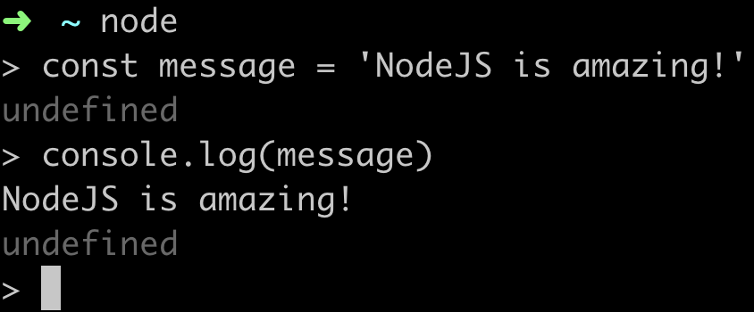
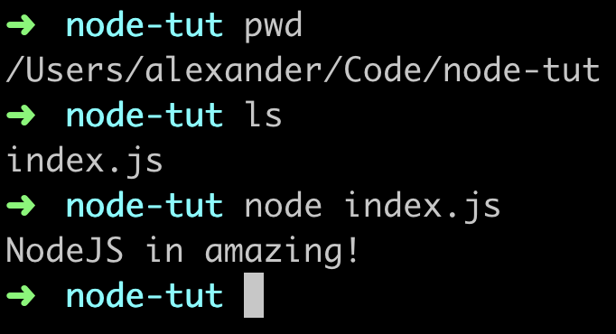

1. Вступ
Node.js — легке і ефективне середовище виконання JavaScript. Дозволяє писати високопродуктивні серверні додатки і інструменти. Node.js побудований на JavaScript-движку V8 і написаний на C ++, тому він швидкий.
Спочатку Node.js створювався як серверне оточення для додатків, але розробники почали використовувати його для створення інструментів, які допомагають автоматизувати виконання локальних завдань. В результаті виникла навколо Node.js нова екосистема інструментів (на кшталт Grunt і Gulp), привела до трансформації процесу фронтенд-розробки.
1.1. Установка
Щоб встановити останню версію перейдіть на
офіційну сторінку, завантажте інсталятор і
дотримуйтесь вказівкам, досить просто натискати Next. Є установники для
Windows і MacOS, а також скомпільовані бінарники і вихідний код для Linux.
Після установки, в терміналі буде доступна команда node. Для того щоб
переконатися що установка пройшла успішно, перевірте версію, запустивши в
консолі команду node з прапором version.
node --version
2. Основи Node.js
Node.js дозволяє виконувати JavaScript-код без браузера. Відкрийте будь-який
термінал, і виконайте команду node, запуститься
REPL — інтерактивне середовище виконання
JS-коду. Виведемо щось в консоль.

Для того щоб вийти з REPL, два рази натисніть комбінацію
Ctrl+C.
Тепер створимо папку node-tut, а в ній файл index.js з кодом який ми писали
в REPL. Для запуску потрібно відкрити термінал і перейти в папку node-tut, в
якій лежить index.js.
// index.js
const message = 'Node.js in amazing!';
console.log(message);
Тепер в консолі запускаємо файл за допомогою команди node index.js. Отримуємо
той же результат - висновок рядка безпосередньо в терміналі.

В цьому і полягає суть Node.js - можливість виконувати JavaScript поза браузера. Таким чином можна писати цілі додатки, наприклад бекенд або інструменти не залежать від браузера.